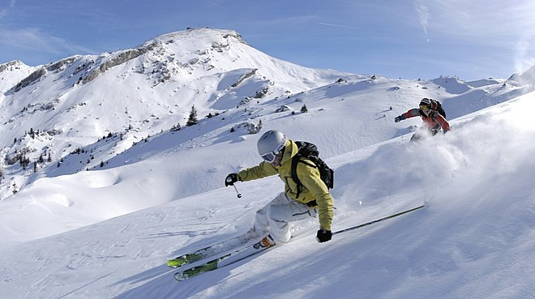
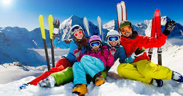

Welcome to PC Skiing, your ultimate destination for everything skiing! Whether you’re a seasoned pro carving through fresh powder or a beginner taking your first glide down the slopes, we’re here to equip you with the best gear and expert advice. Located in the heart of Park City, we combine a passion for skiing with top-quality products to make your adventure unforgettable.
At PC Skiing, skiing isn’t just a sport; it’s a way of life. Founded by a team of ski enthusiasts with decades of experience on the slopes, we aim to share our love for winter sports with the community. Our mission is to provide personalized service, expert knowledge, and gear that matches your unique needs, ensuring you’re ready for the mountain, no matter the conditions.

We offer a wide range of skis, boots, bindings, and poles from the world’s leading brands, including Atomic, Fisher, and Salomon. From all-mountain skis for versatility to specialized racing or freestyle skis, we have something for every style and skill level. Not sure what to choose? Our friendly staff will guide you in finding the perfect setup.

Need a pass to Ski? Get an Epic Pass and ski at the many resorts the pass offers
For snowboarders, we carry top-tier boards, bindings, and boots tailored to your riding style. Whether you love the adrenaline of freeriding or the creativity of terrain parks, you’ll find the right gear here. Plus, we stock premium accessories like helmets, goggles, and gloves to keep you safe and comfortable while shredding the slopes.
Stay warm and stylish with our collection of ski and snowboard apparel. We stock insulated jackets, pants, and base layers from trusted brands like [Brand D] and [Brand E]. Don’t forget your accessories—choose from a variety of hats, gloves, and neck warmers to protect you from the elements. For added comfort, check out our range of heated socks and boot warmers!

Visiting the slopes without your gear? No problem! Our rental service offers high-quality skis, snowboards, boots, and poles for adults and kids. With flexible daily or weekly rental options, you can enjoy top-performing equipment without the commitment of ownership. Plus, our gear is meticulously maintained and fitted to ensure a safe and enjoyable experience.
Keep your equipment in top condition with our professional tuning and repair services. From waxing and edge sharpening to base repairs and binding adjustments, we’ve got you covered. Our technicians use state-of-the-art equipment and techniques to extend the life of your gear and enhance its performance.
Looking to improve your skills or try skiing for the first time? We partner with local ski schools to offer lessons for all ages and abilities. Plus, check out our calendar for in-store events, demo days, and community gatherings where you can meet fellow ski enthusiasts, test new gear, and share your love for winter sports.
Can’t make it to our store? No worries! Browse our inventory online and shop from the comfort of your home. We offer fast and reliable shipping, so you can have your gear ready before your next adventure. Don’t forget to sign up for our newsletter to receive updates on new arrivals, sales, and exclusive discounts.
At [Your Store Name], we’re more than a store; we’re a community of passionate skiers and snowboarders who live for the thrill of the mountain. Follow us on social media for tips, inspiration, and the latest updates from our team. Whether you’re gearing up for your next trip or simply looking for advice, we’re here to help make your ski season the best one yet!
Back to the Top